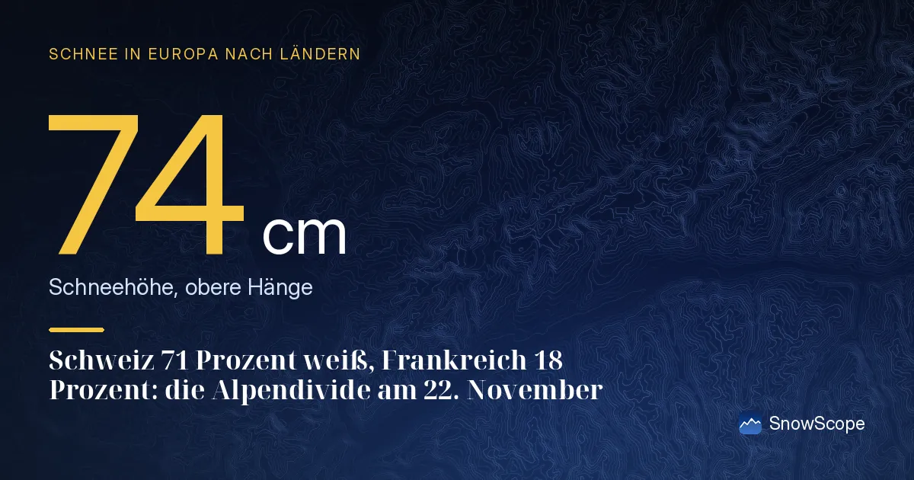

Schweiz 71 Prozent weiß, Frankreich 18 Prozent: die Alpendivide am 22. November
Die Schweizer Berge sind am selben Tag deutlich weißer als die französischen: 71 Prozent Schneebedeckung gegen 18 Prozent. Diese Lücke zeigt, wie die jüngsten Stürme die beiden Länder unterschiedlich behandelt haben, wobei Schweizer Skigebiete deutlich mehr Wasser in Form von Neuschnee speichern.
Die Live-Schneeprognose für Glacier 3000 in der SnowScope-AppSchneehöhen, Pulverschnee-Alarme und 3D-Karte, gratis.
Warum die Schweiz so viel weißer ist
Der Unterschied ist auffällig. Am 22. November zeigt unser Modell die Schweiz mit Schnee über 71 Prozent des kartografischen Gebiets, während Frankreich bei nur 18 Prozent liegt. Das ist kein Zufall. Die Atlantikstürme, die in der vergangenen Woche durch die Alpen gezogen sind, haben auf der Schweizer Seite deutlich mehr Schnee abgelagert, besonders im Wallis und in der Berner Oberland.
Der Grund liegt teilweise in der Geografie und teilweise im Timing. Schweizer Berge fangen die erste Feuchte ab; französische Hänge bekommen oft trockenere Luft ab. In den vergangenen 72 Stunden erhielten die Walliser Alpen 166 cm Schnee – eine dramatische Wiederaufladung für eine Bergkette. Die Berner Oberland verzeichnete 112 cm. Frankreichs Schneeführer La Grave registrierte im gleichen Zeitraum 171 cm, aber das ist ein Punkt, keine Region. Über ganz Frankreich verteilt bleibt die Schneebedeckung fleckig und niedrig.
Aus hydrologischer Sicht ist das wichtig. Schnee ist gespeichertes Wasser. Die Schweiz baut Anfang November deutlich schneller ein Winterreservoir auf als Frankreich. Dieses Wasser wird Flüsse und Stauseen durch Frühling und Sommer speisen.
| Land | Weiß | Schneereichstes Skigebiet | Nächste 7 Tage |
|---|---|---|---|
| Schweiz | 71 % | Glacier 3000 | 49 cm |
| Österreich | 60 % | Stubaier Gletscher | 25 cm |
| Frankreich | 18 % | La Grave | 38 cm |

Nachbarn: unterschiedliche Starts
Österreich, Schweiz' östlicher Nachbar, sitzt zwischen den beiden Extremen bei 60 Prozent Schneebedeckung. Sein Leader, Stubaier Gletscher, hält 67 cm Neuschnee in 72 Stunden – solide, aber hinter Schweiz' Top-Skigebieten. Österreich sieht in den nächsten 7 Tagen weniger einkommende Stürme (25 cm Vorhersage) im Vergleich zu Schweiz' 49 cm und Frankreichs 38 cm.
Frankreich ist die Geschichte des Potenzials ohne noch genug Tiefe. La Grave, berühmt für steiles Gelände, hat 171 cm in drei Tagen eingefangen – beeindruckend für eine Punktmessung. Aber die breiteren französischen Alpen bleiben dünn. Dieses Ungleichgewicht bedeutet, dass Skifahrer in Frankreich nach Taschen guten Schnees suchen, statt überall hinein zu fahren.

Wo das Schweizer Wasser am tiefsten ist
Glacier 3000 führt mit 74 cm an seinem Messpunkt und 108 cm Neuschnee in 72 Stunden. Seine Spitze liegt auf 2.931 m, hoch genug um zu halten, was sie gefangen hat. Zermatt, auf 3.872 m, ist das höchste Skigebiet auf unserer Liste; es hält 65 cm, aber hat 74 cm in drei Tagen akkumuliert und profitiert von der Gletcherhöhe, wo Schnee länger bestehen bleibt.
In den Walliser Alpen insgesamt ist die Schneedecke über 2.500 m am dicksten, wo unser Modell eine mittlere Tiefe von 34 cm schätzt. Selbst die 2.000–2.500 m-Zone durchschnittlich 21 cm. Diese Schichtung bedeutet, dass die Berge Wasser effizient in der Höhe speichern, wo es nicht schnell schmelzen wird.
Was kommt
Die nächsten drei Tage werden mehr Wasser auf die Schweizer Berge bringen. Bis zu 38 cm werden im ganzen Land erwartet. Morgen, 23. November, sieht nach dem schneereichersten Tag aus, mit bis zu 28 cm erwartet. Das ist der erste bedeutende Schneetag in unserem Modellauf.
In den nächsten sieben Tagen erreicht die Gesamtvorhersage 49 cm. Das wird die Schneebedeckung höher treiben und die Schneedecke weiter vertiefen, besonders über 1.500 m, wo bereits volle Bedeckung etabliert ist. Frankreich sieht 38 cm im gleichen Zeitraum – etwas aufholend, aber von einer viel dünneren Basis.
Der Trend: schnelle Wiederaufladung
Vor einer Woche hatte die Schweiz Schnee über gerade 16.800 Quadratkilometer. Heute deckt es 22.110 Quadratkilometer – eine Zunahme von 5.310 Quadratkilometern in sieben Tagen. Das ist eine Expansion des weißen Gebiets um 32 Prozent. Der Trend ist seit 19. November steil ansteigend, mit kurzen Dips, aber einer klaren Aufwärtsbewegung.
Diese Wiederaufladungsgeschwindigkeit ist typisch für Frühjahrs-Stürme in den Alpen. Die Berge absorbieren Wasser schnell. Vom 16. November bis heute wuchs die Schneebedeckung um 2.370 Quadratkilometer in nur 24 Stunden, was zeigt, wie schnell sich Bedingungen ändern können, wenn feuchtigkeitsbeladene Luft einzieht.
Höhe zählt: Schneegrenze bei 1.100 m
Unser Modell platziert die Schneegrenze heute bei 1.100 m. Das bedeutet, dass unter dieser Höhe Schnee selten ist: nur 16 Prozent Schneebedeckung im 500–1.000 m-Band. Zwischen 1.000 und 1.500 m sind 77 Prozent weiß, aber die mittlere Tiefe ist nur 4 cm – dünn und anfällig für Schmelze oder Wind. Über 1.500 m hält volle Bedeckung, mit Tiefen von 15 cm bis 34 cm je nach Höhe.
Für Skigebiete niedriger als 1.500 m hängt Zuverlässigkeit in der Frühjahrszeit von Schatten, Höhe und anhaltendem Schneefall ab. Skigebiete über 2.000 m bauen eine solide Basis auf, die bestehen bleibt.
Tipps für Skifahrer
- Wenn du in der Schweiz skifahrst, konzentriere dich auf Skigebiete über 1.500 m, wo Schnee kontinuierlich ist. Glacier 3000 und Zermatt haben Tiefe und Höhe auf ihrer Seite.
- Beobachte die nächsten 48 Stunden: 28 cm sind für 23. November erwartet. Das wird flache Bereiche füllen und die Basis überall stärken.
- In Frankreich suche hochalpines Gelände (La Grave, höhere Sektoren von Chamonix), wo Neuschnee akkumuliert. Unterhänge könnten noch dünn sein.
- Konsultiere das offizielle Lawinenbulletin, wenn du abseits der Piste gehst; Neuschnee und steile Hänge sind eine Gefährdunskombination.
- Überprüfe die genaue Höhe und Exposition deines gewählten Skigebiets vor du fährst. Frühjahrszeit bedeutet, dass Exposition und Höhe der Unterschied zwischen gutem Schnee und Felsen sind.
Zu diesen Zahlen
Die Schneehöhen der Skigebiete sind der meiste Schnee in den oberen Hängen laut SnowScope-Schneemodell (etwa 1 km, Lauf vom 22. November); es sind Schätzungen für eine Fläche, keine Messung an einem Punkt. Werte von Messstationen sind Messungen am angegebenen Tag. Prognosen können sich ändern. Lies vor dem Freeriden immer den offiziellen Lawinenlagebericht.
Diesen Bericht zitieren
Für Forschung, Lehre oder Presse: Zahlen und Grafiken sind unter CC BY 4.0 mit dieser Quellenangabe frei nutzbar.
SnowScope (2026), Schweiz 71 Prozent weiß, Frankreich 18 Prozent: die Alpendivide am 22. November, https://snowscope.app/blog/de/2026/11/switzerland-snow-vs-neighbours-22-november-2026.html, abgerufen am 2026-11-22
SnowScope (Atlas Labs). (2026, November 22). Schweiz 71 Prozent weiß, Frankreich 18 Prozent: die Alpendivide am 22. November. SnowScope snow reports. https://snowscope.app/blog/de/2026/11/switzerland-snow-vs-neighbours-22-november-2026.html
BibTeX
@misc{snowscope2026switzerlandsnowvsneighbo,
author = {{SnowScope (Atlas Labs)}},
title = {Schweiz 71 Prozent weiß, Frankreich 18 Prozent: die Alpendivide am 22. November},
year = {2026},
month = nov,
howpublished = {\url{https://snowscope.app/blog/de/2026/11/switzerland-snow-vs-neighbours-22-november-2026.html}},
note = {Published 2026-11-22 11:38 UTC; accessed 2026-11-22}
}· CC BY 4.0 · Methoden, Daten und Werkzeuge →
Glacier 3000: Schnee und Temperatur nach Höhe, dieser Winter vs letzter (Werkzeuge) →
Glacier 3000 folgen
Gratis: eine Nachricht, wenn Neuschnee kommt, und jeden Morgen die Vorhersage.